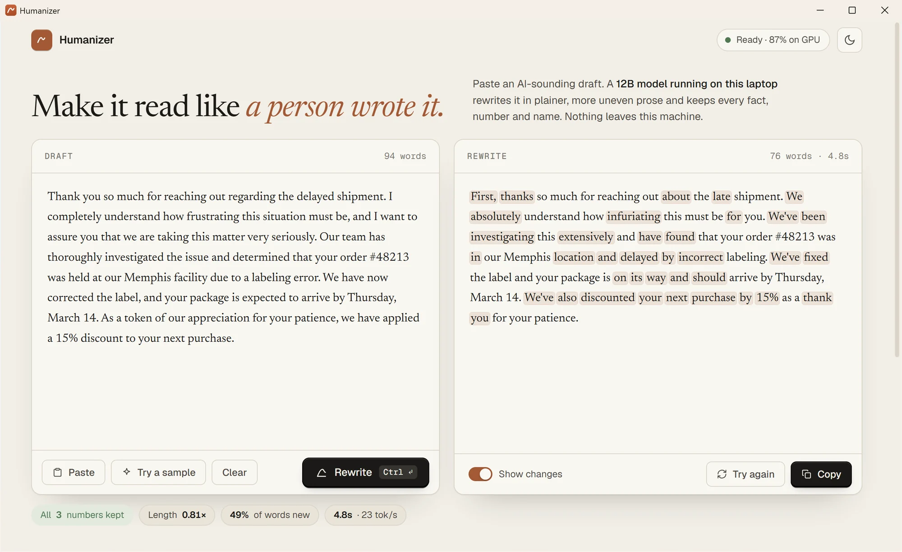

Make it read like
a person wrote it.
Humanizer is a free Windows app that rewrites stiff, AI-sounding drafts into plain, uneven, human prose. A 12B model runs on your own laptop, so nothing you paste leaves it, and every fact, number and name makes it through.

See it work
Same facts. Fewer tells.
Hedging, throat-clearing and stock phrases get cut; names, numbers and dates stay put. These are real outputs from the app.
The model samples freely, so each run reads a little differently. Press Try again in the app for another take.
How it works
Three steps, no account.
The first launch walks you through setup. After that it opens straight to a blank draft.
Download one file
Humanizer.exe is 13.2 MB with no installer. Put it anywhere and double-click it.
Let it set itself up
It helps you install Ollama (free, open source), checks your graphics card, then downloads the right model size, with resume and a checksum check.
Paste, rewrite, copy
Ctrl + Enter starts a rewrite. Words stream in as they're written; Esc stops. Copy it, or try again for another take.
What else it does
Small app, careful habits.
It does one job and tries not to get in the way of it.
Stays on your laptop
No account, no upload, no tracking. After setup it works with the Wi-Fi off.
Checks the facts it can
It confirms every number in your draft appears in the rewrite and flags the ones that don't. Words and meaning are still yours to read.
Shows what changed
One switch highlights every word it rewrote, so you can see exactly what you're signing off on.
Handles long documents
Long text is split at paragraph breaks into pieces of about 350 words, the size the model was trained on, and joined back up.
Sized to your graphics card
Five model sizes from 3.9 to 12.7 GB. Setup reads your GPU memory and recommends the best one that fits.
Gives the GPU back
Close the window and the model unloads, so games and other apps get their graphics memory back.
Download
Free for Windows.
One file. The model (4 to 13 GB, depending on your graphics card) downloads the first time you open it.
Humanizer for Windows
Windows 10 or 11, 64-bit. No installer: save it anywhere, then double-click.
Download Humanizer.exeWindows will probably warn you the first time
The app isn't code-signed yet, so SmartScreen doesn't recognize it.
- When you see Windows protected your PC, click More info.
- Click Run anyway. Windows won't ask again for this file.
Verify the download
In PowerShell, in the folder you saved it to:
Get-FileHash .\Humanizer-1.0.1.exeThe hash should be:
E6C9F54645752B02EA73EB7E2377E07E4C119F856EAC3DA3DBFF8CFF5BA50AB7System
Windows 10 or 11, 64-bit
Memory
16 GB or more recommended
Storage
4 to 13 GB for the model, and about twice that free while it installs
Graphics
Not required, but a GPU with 8 GB or more makes it fast: about 4 seconds for 100 words on an RTX 5070 Ti laptop.
Questions
Before you download.
Is it really free?
Yes. The app, Ollama and the model are all free, and there's no account or subscription.
Does my writing leave my computer?
No. Rewrites happen entirely on your laptop. The app only goes online during setup, to download Ollama and the model from Hugging Face, and even its fonts are built in.
Will the rewrite get past an AI detector?
We don't promise that. Detectors disagree with each other, change often and flag human writing too. Humanizer is built to make drafts read naturally while keeping what they say.
If your school or workplace limits AI-assisted writing, rewriting a draft doesn't change what's allowed.
Which model size should I pick?
Take the one setup recommends. It picks the largest size that runs well on your graphics card. Bigger sizes read a little better but run slower; without a dedicated GPU it runs on the processor, which works but takes a while.
Why does Windows warn me about it?
Windows shows that warning for apps that aren't code-signed, which costs money and takes time to set up. You can check the file against the SHA-256 hash in the download section.
Who made the model?
It's jialinyyzz/humanizer, a fine-tune of Google's Gemma 4 12B, published on Hugging Face under the Apache 2.0 license. It runs through Ollama. This app is independent and isn't made by or affiliated with the model's authors, Google or Ollama.
How do I uninstall it?
Delete Humanizer.exe. To free the model's disk space, run ollama rm humanizer in a terminal. Settings and history live in %LOCALAPPDATA%\Humanizer. If you don't use Ollama for anything else, uninstall it from Settings → Apps.